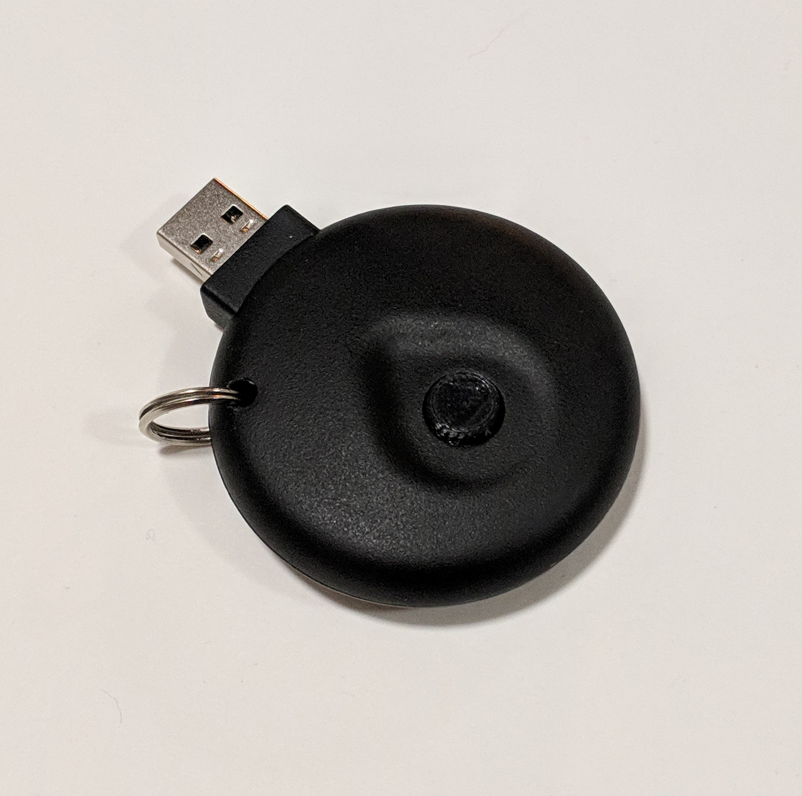

Dan Bish
Mechanical Engineer
JUL Flashlight
I ideated, UX tested, and prototyped a flashlight for streetwear brand JUL. Once a finalized design was approved I manufactured a small batch using urethane casting. USB allows for recharging of embedded Lithium Ion Battery.

Sketching
Initial sketches of different potential designs.

Case Prototyping
Prototypes of different designs were made and user tested.

Case Iterations
Once a general design was chosen, a 3D printer was used to iterate on the case design to improve structural integrity, ergonomics, and moldability.

Silicone Button Iterations
A small batch of the final design was molded in a urethane casting process. Different silicone buttons were cast and user tested.

Final Design
Final Design